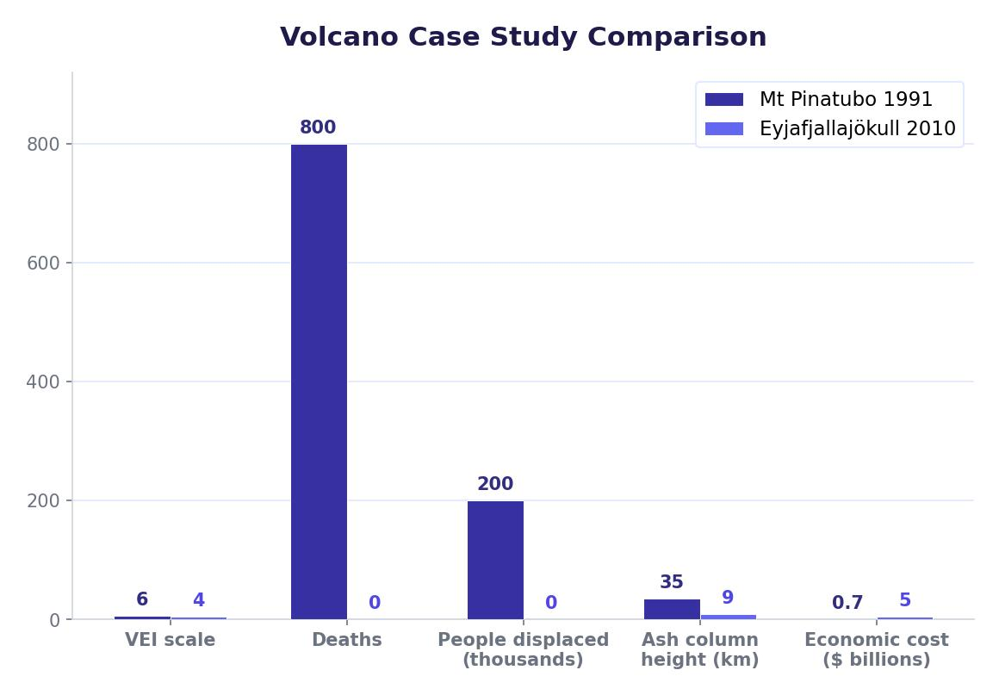

The Three Ps
People cannot stop tectonic hazards from happening, but they can reduce the risks they pose. The three main strategies for reducing the impact of earthquakes and volcanic eruptions are known as the Three Ps: Prediction, Protection and Planning. The wealthier a country is, the more it can invest in all three.
The Three Ps work together. Prediction gives people warning, protection reduces the damage when a hazard strikes, and planning ensures people know what to do and help arrives quickly. No single strategy is enough on its own — an effective approach uses all three.

Prediction (Monitoring)
Prediction involves using scientific equipment and techniques to monitor the Earth’s movements and detect warning signs before a major tectonic event. The aim is to give people enough warning to evacuate or take protective action. Scientists ideally want at least two days’ warning before a major hazard, but this is extremely difficult to achieve with current technology.
Methods of Prediction
- Seismometers — instruments placed in the ground that detect vibrations and small earthquakes. A series of small tremors can sometimes indicate that a larger earthquake is building. Seismometers are the most widely used monitoring tool.
- Ground radar and satellites — used to detect tiny movements in the Earth’s surface, changes in ground level, and shifts in tectonic plates. GPS technology can track plate movement to within millimetres.
- Gas monitoring — rising levels of gases such as radon and sulphur dioxide from the ground can signal increased volcanic or seismic activity beneath the surface.
- Changes in magnetism — shifts in the Earth’s magnetic field near fault lines can sometimes precede earthquakes.
- Animal behaviour — some scientists study unusual animal behaviour (such as animals fleeing an area) as a potential early warning sign, though this remains unproven and unreliable.
- Studying past events — scientists analyse patterns from previous earthquakes along known fault lines to estimate the likelihood and timing of future events.
Despite all these methods, scientists cannot yet predict exactly when or where an earthquake will happen. Current techniques are unreliable and at best can narrow the window to within about two years. For volcanoes, prediction is somewhat more successful — rising magma causes measurable changes in ground shape, gas emissions and seismic activity that can give days or weeks of warning. Even so, false alarms are common and evacuating millions of people based on uncertain data is extremely difficult. Scientists are constantly improving their knowledge, but reliable earthquake prediction remains one of the biggest challenges in geoscience.
Scientists know where earthquakes are likely to happen (along plate boundaries and known fault lines) and can focus monitoring on these areas. The challenge is knowing when the next major earthquake will strike.
Protection
Protection involves constructing buildings and infrastructure that can withstand the forces of an earthquake, making them safer to live and work in. Most people killed or injured during an earthquake are hit by or trapped in buildings that collapse. If buildings can be made stronger, the death toll drops dramatically.
Earthquake-Resistant Building Features
Earthquake-resistant buildings use a range of engineering techniques to absorb the energy of an earthquake rather than cracking and collapsing:
- Deep foundations — driven deep into solid rock to anchor the building securely.
- Rubber shock absorbers — placed between the foundations and the building to absorb vibrations, allowing the structure to move with the shaking rather than resisting it rigidly.
- Steel frames — flexible steel structures that bend without breaking, unlike rigid concrete which cracks.
- Cross-bracing — diagonal steel beams in the walls that strengthen the structure against sideways forces.
- Shatter-proof glass — windows designed to flex rather than shatter, reducing the risk of injury from flying glass.
- Fire-resistant materials — reduce the risk of fires caused by broken gas pipes and electrical cables.
Buildings can be made earthquake-resistant, but they cannot yet be made earthquake-proof. Even the best-designed structures can be damaged by an extremely powerful earthquake. The goal is to keep the building standing long enough for people to evacuate safely.
Earthquake-resistant buildings are expensive to design and construct. Wealthy countries like Japan and New Zealand can afford strict building codes and modern construction methods. In poorer countries like Haiti and Nepal, many buildings are made from cheap, unreinforced materials such as mud brick or basic concrete that crumble instantly during an earthquake. This is a major reason why death tolls are so much higher in LICs — the buildings themselves become the biggest danger.
Planning
Planning involves preparing people and communities for what to do before, during and after a tectonic event. Good planning saves lives because people react faster and more calmly when they have practised what to do.
Key Elements of Planning
- Evacuation plans — clear routes and procedures for moving people away from danger zones. These are especially important for volcanic eruptions, where ash clouds, pyroclastic flows and lahars can threaten entire communities.
- Emergency drills — regular practice so that people know exactly what to do when an earthquake strikes. In Japan, children practise earthquake drills at school from a young age.
- Emergency supplies — households in earthquake-prone areas are encouraged to keep supplies of water, food, torches, first aid kits and batteries ready at all times.
- Emergency shelters — pre-identified buildings, schools or open areas where evacuated people can gather safely and receive food, water and medical help.
- Emergency response plans — governments and emergency services create detailed plans for search and rescue, medical treatment, distributing aid, and maintaining law and order. These plans are rehearsed regularly.
- Specialist search and rescue teams — wealthy countries invest in highly trained teams with specialist equipment such as sniffer dogs, thermal cameras and heavy lifting gear.
- National emergency response plans — central government plans that coordinate the response across the whole country, ensuring help reaches the right places quickly.
The wealthier a country is, the more money it can invest in all Three Ps. This is why HICs like Japan and New Zealand suffer far fewer deaths from tectonic hazards than LICs like Haiti and Nepal, even though they experience earthquakes of similar or greater magnitude.
Seismometer Warnings
Even though scientists cannot predict earthquakes far in advance, modern seismometer networks can detect the first seismic waves from an earthquake within seconds. This can give people a brief warning — sometimes just 10–60 seconds — to take protective action such as turning off gas supplies, getting out of buildings, or sheltering under sturdy furniture. Japan’s earthquake early warning system sends automatic alerts to mobile phones across affected regions, giving millions of people a few vital seconds to prepare.
Education and Community Preparedness
Education is one of the most cost-effective forms of planning. Teaching people how to respond — “drop, cover and hold on” during an earthquake, or knowing the signs of an approaching tsunami — can save lives even where expensive technology is not available. Community preparedness programmes in countries like Chile and the Philippines have reduced death tolls by ensuring that even poorer communities know what to do.